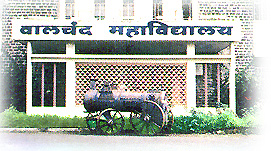

WCE ONLINE FACULTY MANAGEMENT
WCE ONLINE FACULTY MANAGEMENT
WCE ONLINE FACULTY MANAGEMENT
WCE ONLINE FACULTY MANAGEMENT

Walchand College of Engineering became autonomous in 2007. The college revamped its academic structure and contents, in consultation with few US and IIT academic experts. Accordingly nomenclature of B.E and
M.E programs has been changed to B Tech and M Tech programs. After completion of the first term of six years, the College has now received extension of autonomous status for the second term of six years till 2019-20. It participated in the
World Bank funded, Government of India scheme, namely, Technical Education Quality Improvement Program (TEQIP) in Phase I from 2005-2009, wherein it stood all-India 2nd out of 127 participating institutions in terms of program impact performance.
The college is presently participating in Phase II of TEQIP with outstanding performance
To produce capable graduate engineers with an aptitude for research and leadership
Achieve excellence in learning and research through continual improvement in both content and delivery of the academic programmes.
Promote close interaction among industry, faculty and students to enrich the learning process and enhance
career opportunities for students.
Develop state - of - the - art laboratories and other infrastructure commensurate with the need of delivering quality education and research services.
Strngthen the Institution through network of
alumni and optimize use of resources by leveraging inter - departmental capabilities.
Provide opportunities and ensure regular skill. Up - gradation of faculty and staff through structured training programmes.